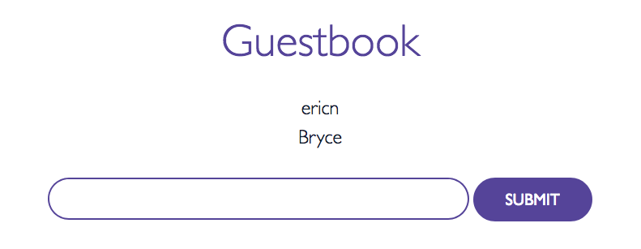

Getting Started with Amazon EKS
This getting started guide helps you to create all of the required resources to use Amazon EKS during the preview.
Amazon EKS Preview Prerequisites
Before you can create an Amazon EKS cluster, you must create an IAM role that Kubernetes can assume to create AWS resources. For example, when a load balancer is created, Kubernetes assumes the role to create an Elastic Load Balancing load balancer in your account. This only needs to be done one time and can be used for multiple EKS clusters.
You must also create a VPC with certain tagging and security group requirements. Although the VPC and security groups can be used for multiple EKS clusters, we recommend that you use a separate VPC for each EKS cluster to provide better network isolation.
This section also helps you to install a custom kubectl binary that is configured to work with Amazon EKS.
Optionally, you can download a custom version of the AWS CLI to use with Amazon EKS.
Create your Amazon EKS Service Role
-
Open the AWS CloudFormation console at https://us-west-2.console.aws.amazon.com/cloudformation.
-
From the navigation bar, select the US West (Oregon) region.
Note
At this time, Amazon EKS is only available in the US West (Oregon) region.
-
Choose Create stack.
-
For Choose a template, select Specify an Amazon S3 template URL.
-
Paste the following URL into the text area and choose Next:
https://amazon-eks.s3-us-west-2.amazonaws.com/2018-04-04/amazon-eks-service-role.yaml -
On the Specify Details page, fill out the parameters accordingly, and then choose Next.
-
Stack name: Choose a stack name for your AWS CloudFormation stack. For example, you can call it eks-service-role.
-
-
(Optional) On the Options page, tag your stack resources. Choose Next.
-
On the Review page, review your information and acknowledge that the stack might create IAM resources. Choose Create.
-
When your stack is created, select it in the console and choose Outputs.
-
Record the RoleArn for the role that was created. You need this when you create your EKS cluster.
Create your Amazon EKS Cluster VPC
-
Open the AWS CloudFormation console at https://us-west-2.console.aws.amazon.com/cloudformation.
-
From the navigation bar, select the US West (Oregon) region.
Note
At this time, Amazon EKS is only available in the US West (Oregon) region.
-
Choose Create stack.
-
For Choose a template, select Specify an Amazon S3 template URL.
-
Paste the following URL into the text area and choose Next:
https://amazon-eks.s3-us-west-2.amazonaws.com/2018-04-04/amazon-eks-vpc-sample.yaml -
On the Specify Details page, fill out the parameters accordingly, and then choose Next.
-
Stack name: Choose a stack name for your AWS CloudFormation stack. For example, you can call it eks-vpc.
-
Cluster name: Choose a name to use for your Amazon EKS cluster. You must use the same name when you create the cluster later.
-
VPC CIDR block: Choose a CIDR range for your VPC. You may leave the default value.
-
Subnet 1 block: Choose a CIDR range for subnet 1. You may leave the default value.
-
Subnet 2 block: Choose a CIDR range for subnet 2. You may leave the default value.
-
-
(Optional) On the Options page, tag your stack resources. Choose Next.
-
On the Review page, choose Create.
-
When your stack is created, select it in the console and choose Outputs.
-
Record the SecurityGroups value for the security group that was created. You need this when you create your EKS cluster; this security group is applied to the cross-account elastic network interfaces that are created in your subnets that allow the Amazon EKS control plane to communicate with your worker nodes.
-
Record the SubnetIds for the subnets that were created. You need this when you create your EKS cluster; these are the subnets that your worker nodes are launched into.
Download and Install the Custom kubectl Binary
Amazon EKS clusters require custom-built kubectl and kubelet binaries that include the Heptio Authenticator to allow IAM authentication for your Kubernetes cluster. This custom version can replace your existing kubectl binary, and you do not need to maintain multiple versions.
Note
This requirement will be obsolete in Kubernetes version 1.10.
To download and install the custom kubectl binary
-
Download the kubectl binary from Amazon S3:
Use the command below to download the binary, substituting the correct URL for your platform. The example below is for macOS clients.
curl -o kubectl https://amazon-eks.s3-us-west-2.amazonaws.com/2018-04-04/bin/darwin/amd64/kubectl -
Apply execute permissions to the binary.
chmod +x ./kubectl -
Copy the binary to a folder in your
$PATH. If you have already installed kubectl (from Homebrew or Apt), then we recommend creating a$HOME/bin/kubectland ensuring that$HOME/bincomes first in your$PATH.cp ./kubectl $HOME/bin/kubectl && export PATH=$HOME/bin:$PATH -
(Optional) Add the
$HOME/binpath to your shell initialization file so that it is configured when you open a shell.-
For Bash shells on macOS:
echo 'export PATH=$HOME/bin:$PATH' >> ~/.bash_profile -
For Bash shells on Linux:
echo 'export PATH=$HOME/bin:$PATH' >> ~/.bashrc
-
Download and Install the Custom AWS CLI
Because Amazon EKS is not yet generally available, it is not included in the AWS CLI. However, you can download and install a custom version of the AWS CLI model to use Amazon EKS.
You must first download and install the standard AWS CLI and then add the Amazon EKS extension model. If you do not already have the standard AWS CLI installed, see Installing the AWS Command Line Interface in the AWS Command Line Interface User Guide.
Note
Your system's Python version must be Python 3, or Python 2.7.9 or greater;
otherwise, you will receive hostname doesn't match errors with
AWS CLI calls to Amazon EKS. For more information, see What are "hostname doesn't match" errors? in the Python Requests
FAQ.
To download and install the custom AWS CLI model for Amazon EKS
-
Download the custom model. from Amazon S3: https://amazon-eks.s3-us-west-2.amazonaws.com/2018-04-04/eks-2017-11-01.normal.json
curl -O https://amazon-eks.s3-us-west-2.amazonaws.com/2018-04-04/eks-2017-11-01.normal.json -
To install the custom model for Amazon EKS, run the following command:
aws configure add-model --service-model file://eks-2017-11-01.normal.json --service-name eks
Step 1: Create Your Amazon EKS Cluster
Now you can create your Amazon EKS cluster.
Important
When the Amazon EKS cluster is created, the IAM user who creates the cluster is added to the Kubernetes RBAC authorization table as the administrator. Initially, only that IAM user can make calls to the master API using kubectl. Also, the custom version of kubectl uses the AWS SDK for Go to authenticate against your Amazon EKS cluster. If you use the console to create the cluster, you must ensure that the same IAM user credentials are in the AWS SDK credential chain when you are running kubectl commands on your cluster.
If you install and configure the AWS CLI, you can configure the IAM credentials for your user. These also work for kubectl. If the AWS CLI is configured properly for your user, then kubectl can find those credentials as well. For more information, see Configuring the AWS CLI in the AWS Command Line Interface User Guide.
To create your cluster with the console
-
Open the Amazon EKS console at https://console.aws.amazon.com/eks/home?region=us-west-2.
Important
You must use IAM user credentials for this step, not root credentials. If you create your Amazon EKS cluster using root credentials, you cannot authenticate to the cluster. For more information, see How Users Sign In to Your Account in the IAM User Guide.
-
Choose Create cluster.
Note
If your IAM user does not have administrative privileges, you must explicitly add permissions for that user to call the Amazon EKS API operations. For more information, see Creating Amazon EKS IAM Policies
-
On the Create master cluster page, fill in the following fields and then choose Create:
-
Master cluster name: A unique name for your cluster. This must be the cluster name you used in Create your Amazon EKS Cluster VPC.
-
Kubernetes version: The version of Kubernetes to use for your cluster. By default, the latest available version is selected.
-
Role ARN: The RoleARN value from the AWS CloudFormation output that you generated with Create your Amazon EKS Service Role.
-
Cluster Subnets: The SubnetIds values (comma-separated) from the AWS CloudFormation output that you generated with Create your Amazon EKS Cluster VPC.
-
Security Groups: The SecurityGroups value from the AWS CloudFormation output that you generated with Create your Amazon EKS Cluster VPC.
-
-
On the Clusters page, choose the name of your newly created cluster to view the cluster information.
-
The Status field shows CREATING until the cluster provisioning process completes. When your cluster provisioning is complete (usually less than 10 minutes), and note the Master endpoint value. This is the endpoint for your Kubernetes master that you use in your kubectl configuration.
-
Retrieve the
certificateAuthority.datafor your cluster. Currently, this value is not displayed in the console, and you must use the following AWS CLI command to retrieve the value.aws eks describe-cluster --region us-west-2 --cluster-namepreview--query cluster.certificateAuthority.data
To create your cluster with the AWS CLI
-
Create your cluster with the following command. Substitute your cluster name, the Amazon Resource Name (ARN) of your Amazon EKS service role that you created in Create your Amazon EKS Service Role, and the subnet and security group IDs for the VPC you created in Create your Amazon EKS Cluster VPC.
Important
You must use IAM user credentials for this step, not root credentials. If you create your Amazon EKS cluster using root credentials, you cannot authenticate to the cluster. For more information, see How Users Sign In to Your Account in the IAM User Guide.
aws eks create-cluster --region us-west-2 --cluster-namepreview--role-arnarn:aws:iam::111122223333:role/eks-service-role-AWSServiceRoleForAmazonEKS-EXAMPLEBKZRQR--subnetssubnet-d474a49f subnet-e794259e--security-groupssg-e829f296Note
If your IAM user does not have administrative privileges, you must explicitly add permissions for that user to call the Amazon EKS API operations. For more information, see Creating Amazon EKS IAM Policies
Output:
{ "cluster": { "status": "NEW", "subnets": [ "subnet-d474a49f", "subnet-e794259e" ], "clusterName": "preview", "roleArn": "arn:aws:iam::111122223333:role/eks-service-role-AWSServiceRoleForAmazonEKS-EXAMPLEBKZRQR", "desiredMasterVersion": "1.9", "certificateAuthority": {}, "securityGroups": [ "sg-e829f296" ], "createdAt": 1522779824913000 } } -
Cluster provisioning usually takes less than 10 minutes. You can query the status of your cluster with the following command; when your cluster status is
ACTIVE, you can proceed.aws eks describe-cluster --region us-west-2 --cluster-namepreview--query cluster.status -
When your cluster provisioning is complete, retrieve the
masterEndpointandcertificateAuthority.datavalues with the following commands. These must be added to your kubectl configuration so that you can communicate with your cluster.-
Retrieve the
masterEndpoint.aws eks describe-cluster --region us-west-2 --cluster-namepreview--query cluster.masterEndpoint -
Retrieve the
certificateAuthority.data.aws eks describe-cluster --region us-west-2 --cluster-namepreview--query cluster.certificateAuthority.data
-
Step 2: Configure kubectl for Amazon EKS
In this section, you create a kubeconfig file for your cluster.
The code block below shows the kubeconfig elements to add to your
configuration. If you have an existing configuration and you are comfortable working
with kubeconfig files, you can merge these elements into your
existing setup. Be sure to replace the <endpoint-url>
value with the full endpoint URL (for example,
https://EXAMPLE_MASTER_ENDPOINT.yl4.us-west-2.eks.amazonaws.com)
that was created for your cluster, replace the
<base64-encoded-ca-cert> with the
certificateAuthority.data value you retrieved earlier, and replace the
<cluster-name> with your cluster name.
apiVersion: v1 clusters: - cluster: server:<endpoint-url>certificate-authority-data:<base64-encoded-ca-cert>name: kubernetes contexts: - context: cluster: kubernetes user: aws name: aws current-context: aws kind: Config preferences: {} users: - name: aws user: auth-provider: config: cluster-id:<cluster-name>name: aws
If you do not have an existing configuration, or to add the Amazon EKS cluster without modifying your existing configuration files, you can use the following procedure to add the Amazon EKS cluster to your configuration.
To create your kubeconfig file
-
Create the default kubectl folder if it does not already exist.
mkdir -p ~/.kube -
Open your favorite text editor and copy the above
kubeconfigcode block into it. -
Replace the
<endpoint-url>with the endpoint URL that was created for your cluster. -
Replace the
<base64-encoded-ca-cert>with thecertificateAuthority.datathat was created for your cluster. -
Replace the
<cluster-name>with your cluster name. -
Save the file to the default kubectl folder, with your cluster name in the file name. For example, if your cluster name is
preview, save the file to~/.kube/config-.preview -
Add that file path to your
KUBECONFIGenvironment variable so that kubectl knows where to look for your cluster configuration.export KUBECONFIG=$KUBECONFIG:~/.kube/config-preview -
(Optional) Add the configuration to your shell initialization file so that it is configured when you open a shell.
-
For Bash shells on macOS:
echo 'export KUBECONFIG=$KUBECONFIG:~/.kube/config-preview' >> ~/.bash_profile -
For Bash shells on Linux:
echo 'export KUBECONFIG=$KUBECONFIG:~/.kube/config-preview' >> ~/.bashrc
-
-
Test your configuration.
kubectl get allNote
If you receive the error
No Auth Provider found for name "aws", you are not using the custom kubectl required for Amazon EKS during the preview. For more information, see Download and Install the Custom kubectl Binary.Output:
NAME TYPE CLUSTER-IP EXTERNAL-IP PORT(S) AGE svc/kubernetes ClusterIP 10.100.0.1 <none> 443/TCP 1m
Step 3: Launch and Configure Amazon EKS Worker Nodes
Now that your VPC and Kubernetes master are created, you can launch and configure your worker nodes.
Important
Amazon EKS worker nodes are standard Amazon EC2 instances, and you are billed for them based on normal EC2 On-Demand prices. For more information, see Amazon EC2 Pricing.
To launch your worker nodes
-
Open the AWS CloudFormation console at https://console.aws.amazon.com/cloudformation.
-
From the navigation bar, select the US West (Oregon) region.
Note
Amazon EKS is only available in the US West (Oregon) region at this time.
-
Choose Create stack.
-
For Choose a template, select Specify an Amazon S3 template URL.
-
Paste the following URL into the text area and choose Next.
https://amazon-eks.s3-us-west-2.amazonaws.com/2018-04-04/amazon-eks-nodegroup.yaml -
On the Specify Details page, fill out the parameters accordingly, and choose Next.
-
Stack name: Choose a stack name for your AWS CloudFormation stack. For example, you can call it
<cluster-name>-worker-nodes. -
ClusterName: Enter the name that you used when you created your Amazon EKS cluster.
Important
This name must exactly match the name you used in Step 1: Create Your Amazon EKS Cluster; otherwise, your worker nodes cannot join the cluster.
-
ClusterControlPlaneSecurityGroup: Choose the SecurityGroups value from the AWS CloudFormation output that you generated with Create your Amazon EKS Cluster VPC.
-
NodeGroupName: Enter a name for your node group that is included in your Auto Scaling node group name.
-
NodeAutoScalingGroupMinSize: Enter the minimum number of nodes that your worker node Auto Scaling group can scale in to.
-
NodeAutoScalingGroupMaxSize: Enter the maximum number of nodes that your worker node Auto Scaling group can scale out to.
Note
We ask that you limit the number of worker nodes in your cluster no more than 100 during the preview.
-
NodeInstanceType: Choose an instance type for your worker nodes.
-
NodeImageId: Enter the current Amazon EKS worker node AMI ID (ami-228dee5a).
Note
The Amazon EKS worker node AMI is based on Amazon Linux 2, with a custom
kubeletandkube-proxybuilt in. You can track security or privacy events for Amazon Linux 2 at the Amazon Linux Security Center or subscribe to the associated RSS feed. Security and privacy events include an overview of the issue, what packages are affected, and how to update your instances to correct the issue. -
KeyName: Enter the name of an Amazon EC2 SSH key pair that you can use to connect using SSH into your worker nodes with after they launch.
-
VpcId: Enter the ID for the VPC that you created in Create your Amazon EKS Cluster VPC.
-
Subnets: Choose the subnets that you created in Create your Amazon EKS Cluster VPC.
-
-
On the Options page, you can choose to tag your stack resources. Choose Next.
-
On the Review page, review your information, acknowledge that the stack might create IAM resources, and then choose Create.
-
When your stack has finished creating, select it in the console and choose the Outputs tab.
-
Record the NodeInstanceRole for the node group that was created. You need this when you configure your Amazon EKS worker nodes.
To enable worker nodes to join your cluster
-
Download, edit, and apply the AWS authenticator configuration map.
-
Download the configuration map.
curl -O https://amazon-eks.s3-us-west-2.amazonaws.com/2018-04-04/aws-auth-cm.yaml -
Open the file with your favorite text editor, replace the
<ARN of instance role (not instance profile)>snippet with the NodeInstanceRole value that you recorded in the previous procedure, and save the file.Important
Do not modify any other lines in this file.
apiVersion: v1 kind: ConfigMap metadata: name: aws-auth namespace: default data: mapRoles: | - rolearn:<ARN of instance role (not instance profile)>username: system:node:{{EC2PrivateDNSName}} groups: - system:bootstrappers - system:nodes - system:node-proxier -
Apply the configuration. (This command may take a few minutes to finish)
kubectl apply -f aws-auth-cm.yamlNote
If you receive the error
No Auth Provider found for name "aws", you are not using the custom kubectl required for Amazon EKS during the preview. For more information, see Download and Install the Custom kubectl Binary.
-
-
Watch the status of your nodes and wait for them to reach the
Readystatus.kubectl get nodes --watch
Step 4: Launch a Guest Book Application
In this section, you create a sample guest book application to test your new cluster.
Note
For more information about setting up the guest book example, see https://github.com/kubernetes/examples/blob/master/guestbook-go/README.md in the Kubernetes documentation.
To create your guest book application
-
Create the Redis master replication controller.
kubectl apply -f https://raw.githubusercontent.com/kubernetes/kubernetes/v1.9.2/examples/guestbook-go/redis-master-controller.jsonNote
If you receive the error
No Auth Provider found for name "aws", you are not using the custom kubectl required for Amazon EKS during the preview. For more information, see Download and Install the Custom kubectl Binary.Output:
replicationcontroller "redis-master" created -
Create the Redis master service.
kubectl apply -f https://raw.githubusercontent.com/kubernetes/kubernetes/v1.9.2/examples/guestbook-go/redis-master-service.jsonOutput:
service "redis-master" created -
Create the Redis slave replication controller.
kubectl apply -f https://raw.githubusercontent.com/kubernetes/kubernetes/v1.9.2/examples/guestbook-go/redis-slave-controller.jsonOutput:
replicationcontroller "redis-slave" created -
Create the Redis slave service.
kubectl apply -f https://raw.githubusercontent.com/kubernetes/kubernetes/v1.9.2/examples/guestbook-go/redis-slave-service.jsonOutput:
service "redis-slave" created -
Create the guestbook replication controller.
kubectl apply -f https://raw.githubusercontent.com/kubernetes/kubernetes/v1.9.2/examples/guestbook-go/guestbook-controller.jsonOutput:
replicationcontroller "guestbook" created -
Create the guestbook service.
kubectl apply -f https://raw.githubusercontent.com/kubernetes/kubernetes/v1.9.2/examples/guestbook-go/guestbook-service.jsonOutput:
service "guestbook" created -
Query the services in your cluster and wait until the External IP column for the
guestbookservice is populated.Note
It may take several minutes before the IP address is available.
kubectl get services -o wide -
After your external IP address is available, point a web browser to that address at port 3000 to view your guest book. For example,
http://a7a95c2b9e69711e7b1a3022fdcfdf2e-1985673473.us-west-2.elb.amazonaws.com:3000Note
It may take several minutes for DNS to propagate and for your guest book to show up.
Important
If you are unable to connect to the external IP address with your browser, be sure that your corporate firewall is not blocking non-standards ports, like 3000. You can try switching to a guest network to verify.
Step 5: Cleaning Up Guest Book Objects
When you are finished experimenting with your guest book application, you should clean up the resources that you created for it. The following command deletes all of the services and replication controllers for the guest book application:
kubectl delete rc/redis-master rc/redis-slave rc/guestbook svc/redis-master svc/redis-slave svc/guestbook
Note
If you receive the error No Auth Provider found for name "aws", you
are not using the custom kubectl required for Amazon EKS during the
preview. Be sure that the custom kubectl for Amazon EKS is first in
your PATH. For more information, see Download and Install the Custom
kubectl Binary.